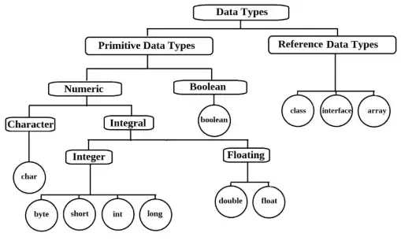
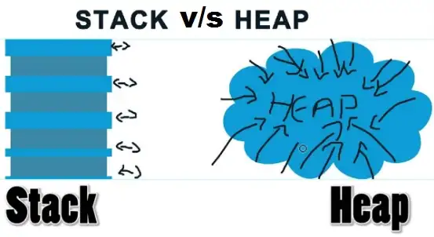
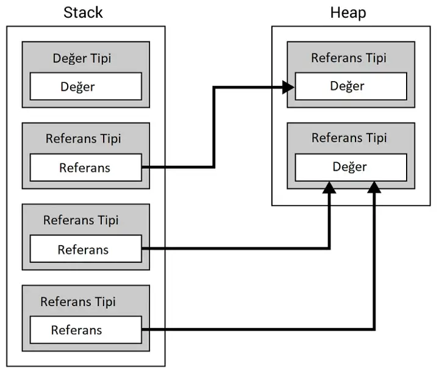
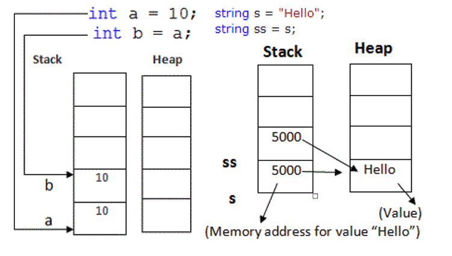
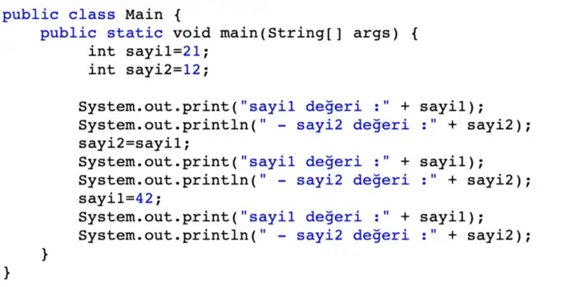
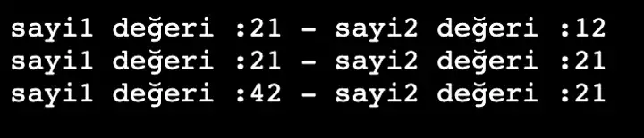
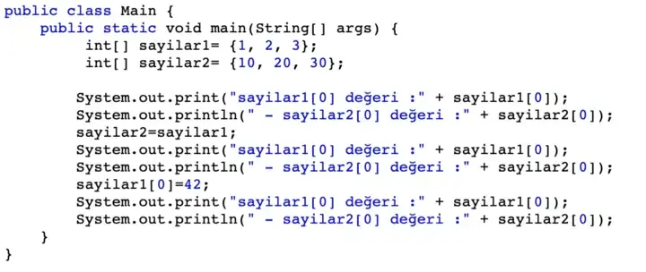
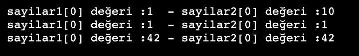

Önsöz
Selam millet, bugün sizlerle birlikte değer ve referans tipleri arasındaki farkı inceleyeceğiz. Bu makalemde JAVA dili Üzerinden Örnekler verirken, değer ve referans tiplerinin C#, C++ Vb. gibi tüm dillerde aynı mantıkla çalıştığını belirtmek isterim.
Nesne yönelimli programlama dillerinde, genel olarak, her sınıf bir veri tipidir, her veri tipi bir sınıftır. JAVA bu genel kurala uyar. Java dilinde veri tipleri üç ana gruba ayırabiliriz.
1. İLKEL (DEĞER) VERİ TİPLERİ
2. REFERANS TİPLERİ
3. NULL VERİ TİPİ
İlk olarak kısa bir tanım yapalım
Değer Tipi: Değer tipi, doğrudan bellekte oluşturulan tiptir.Her örnek, verilerin benzersiz bir kopyasını tutar. Atadığınızda veya kopyaladığınızda, tamamen yeni bir veri oluşturur.
Referans Tipi: Tek bir veriyi paylaşan bir tip. Bir kez başlatıldığında ve bir değişkene veya kişiye veya bir işleve atandığında, bir referans döndürür.
Değer tipi değişkenleri RAM'in stack adı verilen bölgesinde saklanırken, referans tipleri stack ve heap bellek alanlarını birlikte kullanılır.

Stack(Yığın) Ve Heap(Öbek) Bölgeleri
Programlarda kullandığımız veri yapıları değişken ya da nesne olarak bilgisayarın belleğine (RAM) yazılır. Bellek üzerinde stack ve heapm olmak üzere farklı davranan bellek alanları vardır. İleride bahsedeceğimiz üzere; stack alanı değer veri tipi verileri saklar ve programın derlenmesi sırasında rezerve edilir. Stack alanında veriler LIFO prensibine göre sıralı olarak yazılır. Bu sayede buraya erişim çok hızlıdır.
Heap alanı için derleme sırasında herhangi bir rezerve yapılmaz, veriler programın çalışması sırasında dinamik olarak kaydedilir. Heap alanında veriler dağınık halde olduklarından hız daha düşüktür. Yine birazdan değineceğimiz üzere bu bölgeye referans tipi değerler yazılır.

Bu iki farklı mantıksal alanın birbirinden ayrılma nedeni ise değer tipi değişkenlerin ve referans tipi nesnelerin bu bellek bölgelerini farklı şekilde kullanmalarıdır. Farklılıklarını anlamak için değer tipi (value type) ve referans tipi (reference type) kavramlarını örnekle inceleyelim.
DEĞER VERİ TİPİ
Değer tipi, içeriğini stack bölümünden ayrılan bellekte saklar. Bunlar programlama dillerinde ilkel (primitif) değişken tipi olarak adlandırılan tiplerdir.
Bir değer türü oluşturduğunuzda, değeri depolamak için bellekte tek bir alan ayrılır ve bu değişken doğrudan bir değer tutar. Başka bir değişkene atarsanız, değer doğrudan kopyalanır ve her iki değişken de bağımsız çalışır.
Önceden tanımlanmış veri türleri, yaoılar, numaralandırmalarda değer türleridir ve aynı şekilde çalışır. Derleme zamanında değer tüleri oluşturulabilir ve yığın belleğinde saklanabilir, bu nedenle çöp toplayıcı yığına erişemez.
Değer tipi örnekleri; byte, short, int, long, float, double, char, boolen vb'dir.
 
REFERANS VERİ TİPİ
Değer türlerinden farklı olarak, bir başvuru türü, değerini doğrudan saklamaz. Bunun yerine, değerin saklandığı adresi saklar. Başka bir deyişle, bir referans türü, verileri tutan başka bir bellek konumuna işaretçi içerir.
Referans türleri, verinin kendisinden ziyade değişkenin adresini temsil ettiğinden, bir referans değişkeni diğerine atamak verileri kopyalamaz. Bunun yerine, orjinal değerle yığının aynı konumuna atıfta bulunan referansın ikinci bir kopyasını oluşturur.
Referans türü değişkenleri, heap adı verilen farklı bir bellek alanında saklanır. Bu, bir referans tipi değişkeni artık kullanılmadığında çöp toplama için işaretlenebileceği anlamına gelir.
Referans türünün örnekleri, sınıflar, nesneler, diziler, arayüzler(interfaces) vb'dir.
! String bir referans veri türüdür, ancak stringler temelde ilkel değişken tipi olduğu için kullanım esnasında değer veri tipi gibi davranırlar. Bu, bir değer atadığımızda değiştirilemeyeceği anlamına gelir. 
Asıl Fark
Değer tipi ile referans tipi arasındaki temel fark, değer tipinin bir veriyi kopyalaması, referans tiplerinin ise verilerinin tek bir kopyasını paylaşmasıdır. Değer türü değişmez bunun anlamı, bir değer türüne sahip bir örnek oluşturduğumuzda, verilerin benzersiz bir kopyasını oluşturur ve değiştirilemez ancak referans türü değişkendir, değeri değiştirilebilir.